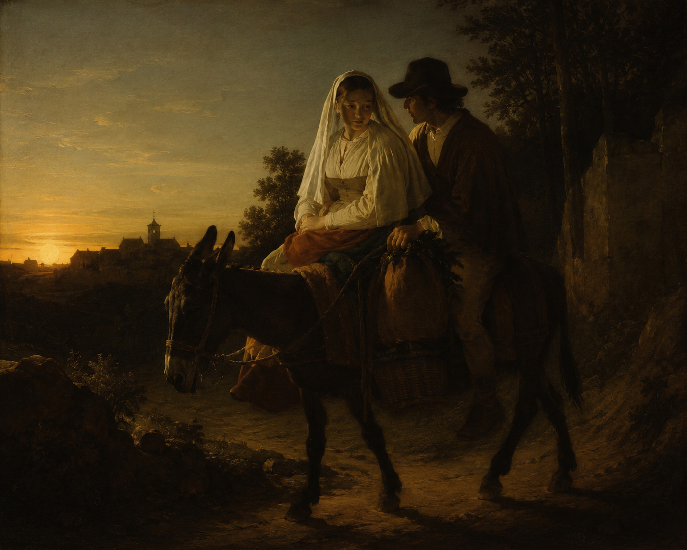

La bonne entente

Un voyageur arriva un jour dans un petit village.
À la taverne, il entendit un homme se plaindre :
— Je n’ai jamais trouvé une femme avec qui je ne me dispute pas sans arrêt.
Un habitué lui répondit :
— J’te l’fais pas dire !
La plupart des clients acquiescèrent en grommelant.
Devant cette unanimité, un homme assis au fond de la salle dit calmement à la cantonade :
— Moi, je connais deux petits vieux qui habitent sur la colline.
Ils sont mariés depuis plus de soixante ans et ne se sont jamais disputés.
— Impossible ! Tout le monde se dispute.
L’homme ne répondit pas et retourna à ses affaires.
Mais le voyageur, très intrigué par ce qu’il venait d’entendre, décida de partir à la recherche du vieux couple.
Arrivé au sommet de la colline, un vieil homme l’invita dans sa maisonnette et lui offrit une tasse de thé.
Après avoir entendu la raison de sa visite, il sourit.
— C’est vrai. En soixante ans de mariage, nous ne nous sommes jamais disputés.
— Comment est-ce possible ? Quel est votre secret ?
Le vieil homme lui raconta alors ceci :
— Tout a commencé juste après notre mariage. Nous rentrions chez nous à dos de mule, le cœur léger, lorsque l’animal trébucha sur une pierre.
« Un », dit ma femme.
Je trouvai cela étrange, mais n’y prêtai pas davantage attention, et nous continuâmes notre route.
Quelques minutes plus tard, la mule trébucha de nouveau.
« Deux », dit ma femme.
Je commençais à me demander ce qu’elle voulait dire lorsque, un peu plus loin, la mule trébucha pour la troisième fois.
« Trois », dit ma femme.
Elle sortit un revolver de je ne sais où et abattit la mule.
J’en fus stupéfait.
— Mais... pourquoi as-tu fait ça ? Qu'est-ce qui t'a pris ?
Elle me regarda droit dans les yeux.
Puis, calmement, elle dit :
— Un.
Nous ne nous sommes plus jamais disputés depuis.
Adapté d'une vieille blague anglophone.
J'adore cette histoire, car en la réécrivant, j'y ai vu des personnes que j'ai bien connues.
Peut-être est-ce d'ailleurs pour cela qu'elle m'a tout de suite fasciné.
Frodric
Cantonade : parole adressée à toutes les personnes présentes, et non à quelqu'un en particulier.
Acquiescer : montrer son accord, dire oui.
Grommeler : parler d'une voix basse et peu distincte.
Trébucher : perdre l'équilibre en heurtant un obstacle.
Échos
Cette histoire vous en a-t-elle rappelé une autre ? Vous pouvez me la raconter ici.